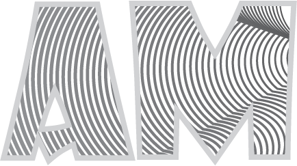
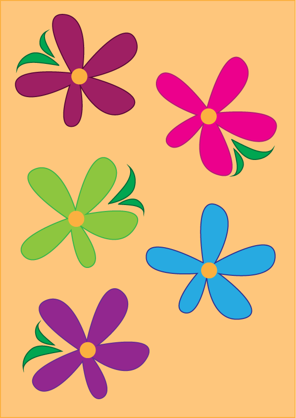
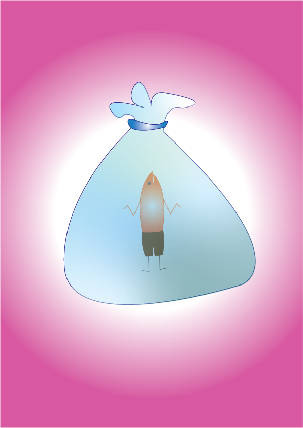
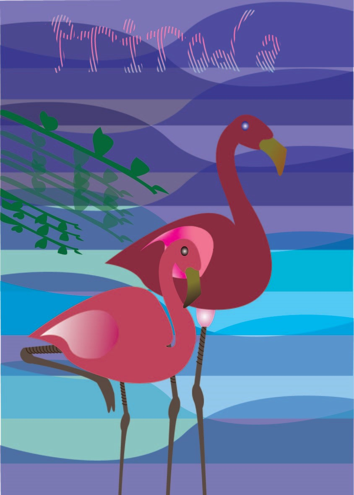
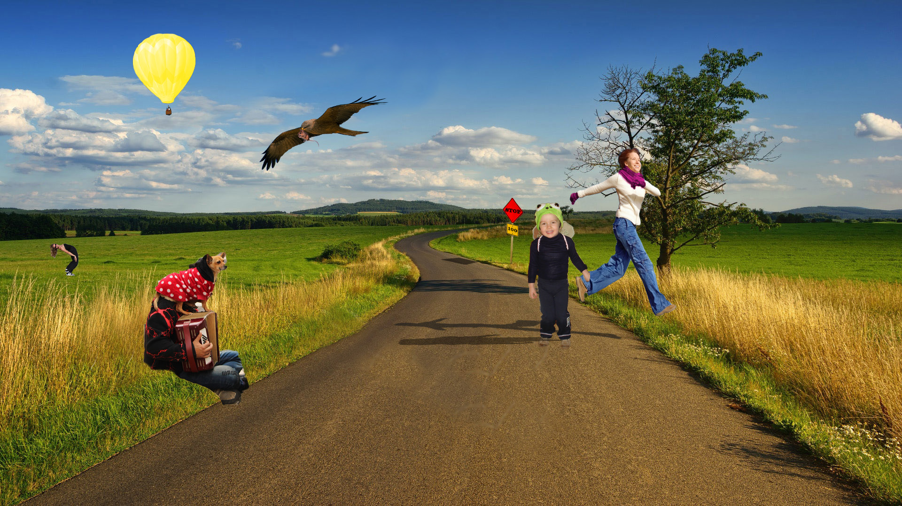

Vježba 2: Bezierova krivulja
Kratki opis vježbe 2: U drugoj vježbe smo koristili Bezierove krivulje da kreiramo zanimljivi efekt koji se prikazuje kao tekstura slova naših inicijala.
Vježba 3: Boja
Vježba 4: Gradijent
Vježba 5: Retuširanje

Vježba 6: Koloriranje

Vježba 7:Fotomontaža

Vježba 8: Kinemagraf
Kratki opis vježbe 8: U osmoj vježbi smo koristeći Adobe Premiere i Adobe Photoshop kreirali kinemagraf, to jest, GIF. Ja sam iskoristila video mačke u prirodi i zamrznula prirodu oko nje.

Projektni zadatak 1: Vektorska grafika
Za projektni zadatak vezan uz vektorsku grafiku smo morali prikazati sliku iz životinjskog svijeta pomoću vektora. Ja sam dobila sliku flamingo ptica, te uz razne alate u Adobe Illustratoru napravila prikazanu sliku.
Projektni zadatak 2: Piksel grafika
Za drugi projektni zadatak smo radili sa piksel grafikom. Služili smo se sa pozadinskom slike nekog pejzaža i na tu sliku dodavali zadane fotografije i vlastite fotografije. Njih smo uređivali sa Color grading tool-om, dodavali sjene da finalni produkt izgleda što više realistično.
